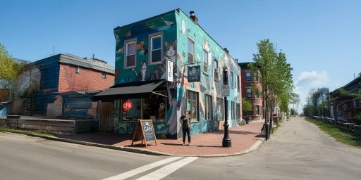

Meows and Mugs began as an unexpected passion project among three ambitious students at Tufts University. Originally, it was just a web design assignment—a fun, fictional cafe website born from a shared love of coffee, creativity, and cats. But after the project went live, something amazing happened. The community’s response was overwhelming, and we quickly realized we were onto something much bigger than a grade.
Determined to turn our vision into reality, we secured funding and dove headfirst into making Meows and Mugs a real space. What started as an idea in the classroom soon blossomed into a mission-driven cafe focused not only on great coffee but also on giving back. Hundreds of supporters rallied behind us, and we launched an initiative to rescue stray cats, providing them with a safe haven until they find their forever homes.
To ensure every cup and bite reflects our values, we’ve partnered with local Medford and Somerville suppliers, sourcing only the finest ingredients. Each sip and treat at Meows and Mugs tells a story of quality, care, and community.
Thanks to the incredible outpouring of love and support, we’re thrilled to announce that we are renovating the historic Dewick-MacPhie dining hall on the Tufts campus to open our second location. This new chapter will bring more cozy spaces, more delicious offerings, and, of course, more feline friends to meet.
Meows and Mugs isn’t just a cafe—it’s a place where coffee and companionship meet, and every visitor becomes part of a community committed to creating a better world, one paw at a time.
We can’t wait to welcome you soon! 🐾
Shayna, with her degree in Animal Welfare and years of experience in rescue work, is the passionate heart behind Meows and Mugs. She’s all about creating a space where cats and people can make that special connection, and she somehow manages to do it while fitting in her hobbies of yoga, gardening, and cooking up plant-based treats (which she’s convinced the cats appreciate, too). For Shayna, volunteering isn’t just a side gig—it’s a calling. She’s been a lifelong advocate for animals, and after helping dozens of rescues, she knew it was time to make her dream come true: a cozy, quirky haven for cat lovers and feline friends alike.

Born and raised in the fog-shrouded hill of San Francisco, Peter knows what a cool cafe looks like. From his first job as a hostel receptionist to his breakthrough contriubutions to the Minecraft animation community, Peter has seen and done it all. When not greeting guests and designing paw-some experiences for everyone who comes in, Peter can be found conquering hikable mountains, writing his next spec script, and meticulously planning his sleep schedule.

Jishnu, with his experience in nonprofit marketing and a knack for social media, makes sure Meows and Mugs shines online and in the hearts of the local community. He’s a hiker, painter, and cat mom to two rescues, Simba and Nala, who inspire his every day. His volunteer work started with a childhood love for rescues, and he sees Meows and Mugs as his way of giving back while spreading the joys (and occasional chaos) of cat ownership.